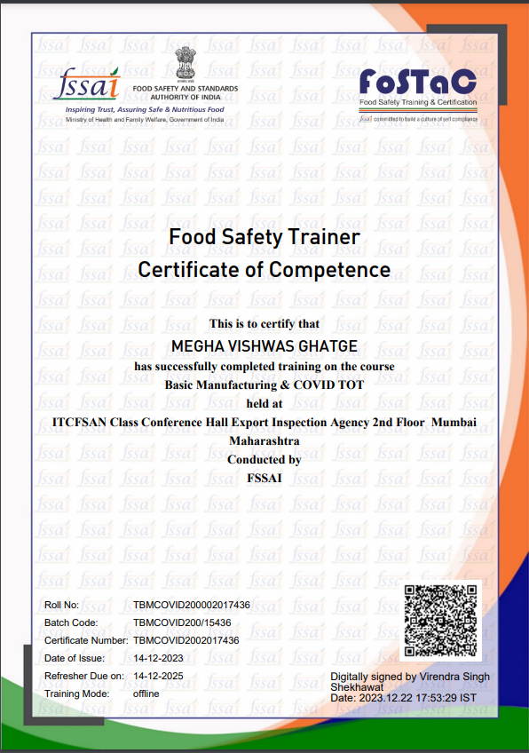

Professional Consulting

With 15 years of industrial experience, we provide expert consulting in food safety and quality management.
Regulatory Compliance
We ensure compliance with international food safety standards including ISO, FSSC, KOSHER, and HALAL certifications.
Training and Audits

Conducting regular training and audits to maintain high standards in food safety and quality.
Organic standards in food safety and quality.